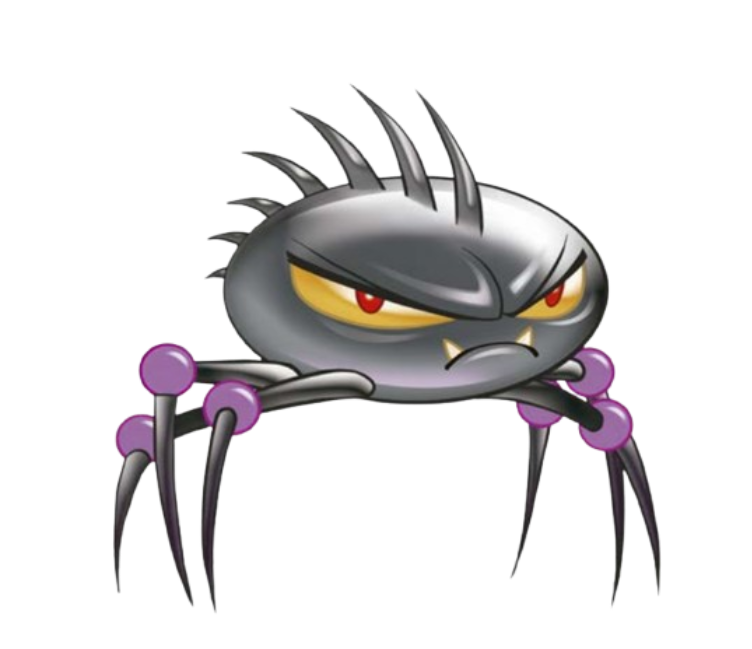
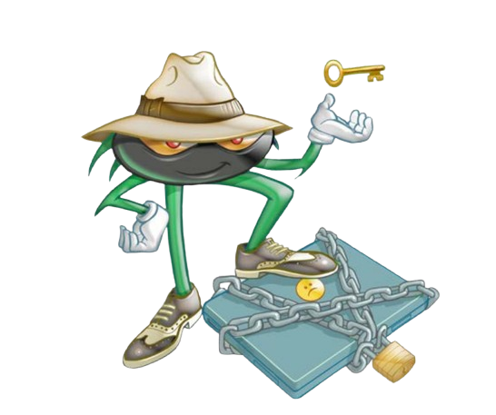
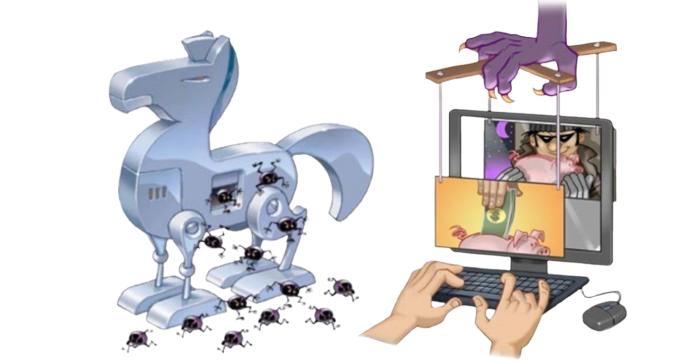

CONHEÇA OS PRINCIPAIS TIPOS
Códigos maliciosos são programas que executam ações danosas e atividades maliciosas. São muitas vezes chamados genericamente de “vírus”, mas existem diversos tipos com características próprias. Conhecer estas características ajuda a identificar comportamentos estranhos no dispositivo e entender as melhores formas de resolver. Também permite estimar o tipo de dano e como atuar, pois alguns furtam dados, outros cifram seus dispositivos e outros podem ser usados para fraudes. Conheça aqui alguns dos principais tipos de códigos maliciosos.
Vírus
O vírus é um dos códigos maliciosos mais conhecidos, embora hoje em dia não seja o mais comum, tanto que seu nome costuma ser usado erroneamente como sinônimo para qualquer tipo de malware. A sua principal característica é que ele se torna parte de programas e arquivos legítimos dentro do sistema. Para funcionar e se propagar, o vírus depende obrigatoriamente da ação do usuário, espalhando-se ao enviar cópias de si mesmo por e-mails, mensagens ou quando o usuário executa um arquivo hospedeiro que já estava infectado.

Ransomware
O ransomware é uma das ameaças mais perigosas da atualidade porque ataca diretamente a disponibilidade dos dados do usuário. Após infectar o dispositivo, este código malicioso bloqueia o acesso ao sistema ou sequestra os arquivos armazenados fazendo o uso de criptografia complexa. Na sequência, ele exibe uma mensagem na tela exigindo o pagamento de um resgate (geralmente cobrado em criptomoedas de difícil rastreio) para que o usuário possa reaver suas informações e para evitar que os dados vazem na internet, estipulando prazos rígidos e formas de contato com o atacante.

Spyware
O spyware é um tipo de código malicioso projetado especificamente para monitorar, coletar e espionar de forma silenciosa todas as atividades executadas em um sistema, enviando essas informações capturadas para terceiros sem que o dono do dispositivo perceba. Ele funciona como uma categoria "mãe" que engloba outras ferramentas espiãs feitas para capturar dados.

Trojan (Cavalo de Tróia)
Inspirado na famosa história da mitologia grega, o Trojan digital funciona exatamente da mesma maneira. Ele se passa por um programa legítimo e útil, fazendo com que o usuário o instale por vontade própria. Porém, por trás dessa fachada inofensiva, ele executa funções maliciosas ocultas e sem o conhecimento de quem o baixou.
